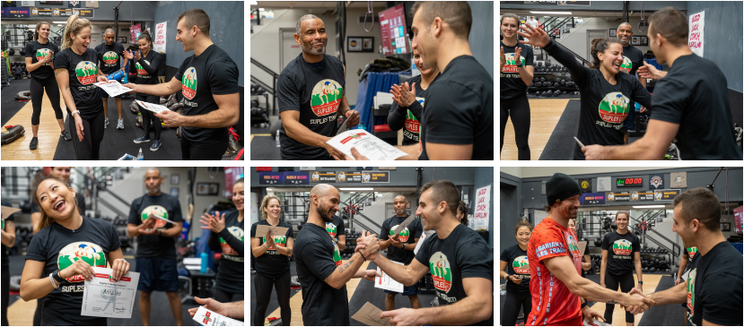
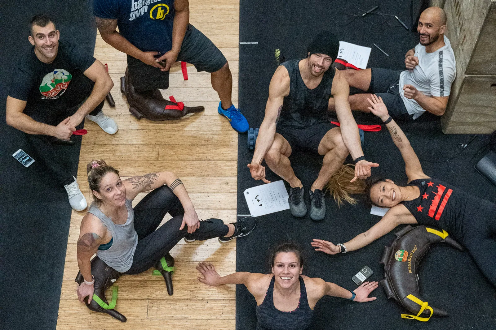

Hi {first_name},
By looking at these photos, it would be hard to tell just what this group had endured a few hours earlier. 
I’m a big proponent that we all need to test ourselves in life.
Sometimes these tests are brought to our doorstep without notice, and other times we seek them out.
In either situation, we have a choice with how we will respond. Will we rise, or will we crumble?
The result we experience afterward is less important. What is critical, however, is how we stand up and continue moving forward in the process.
This group of trainers and coaches at Crossfit Foggy Bottom in Washington, DC did just that.
Their smiles speak of:
- Joy - Respect for self - Brotherhood - Sisterhood - Teamwork - Hard work - Commitment
No matter the challenge, if you can remember to smile even for a moment, I guarantee that a seemingly insurmountable struggle will begin to soften.
And when you get through it, you will respect yourself more in the end.
You will have just endured your test, your rite of passage, and HELL YES to that!
So, where are you rising up in your life right now?
Where are you falling short?
Are you being unreasonable with your goals, or playing it small because that is the safe route?
I invite you to consider these questions and write them down. The act of writing will make the ideas floating around in your head into more real.
I encourage you to be unreasonable with your goals. Go for what you want, and even if you fall short, the process is truly the gift waiting for you.
Just remember these two things: 1. Bringing a smile to a difficult situation can change instantly how you feel and move through it. 2. It’s OK to ask for help when you need it.

Lastly, big respect for this group of warriors this weekend. Each of you inspired me in some way and I am grateful you chose me as your coach. Thank you!
Wishing you a great day!
Mike Salemi
P.S. {first_name}, I’m stoked to share that since the announcement of the Kettlebell Lifestyle Transformation Program, there’s been a huge positive response from people excited to get their hands on this puppy! To further reward all those who jump on board for the beta-release, I’m going to include more resources to elevate your health and performance even more. Tomorrow’s email will touch on the massive gift I have planned for the Kettlebell Lifestyle family.
|